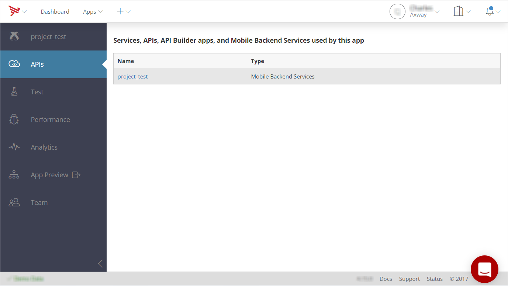
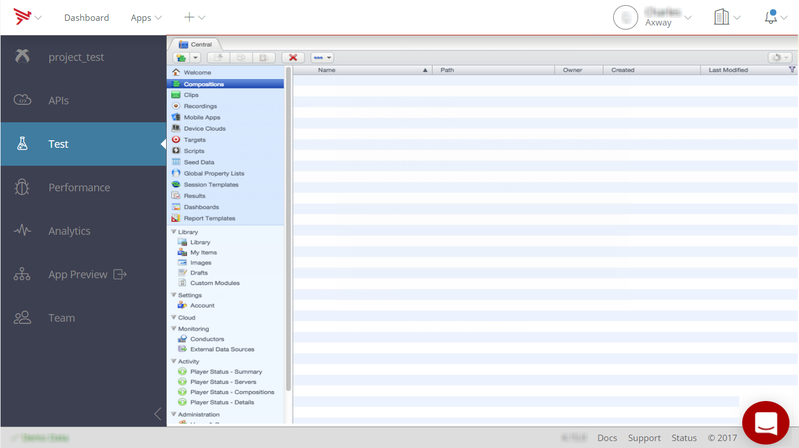
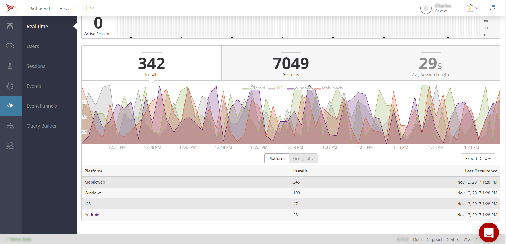
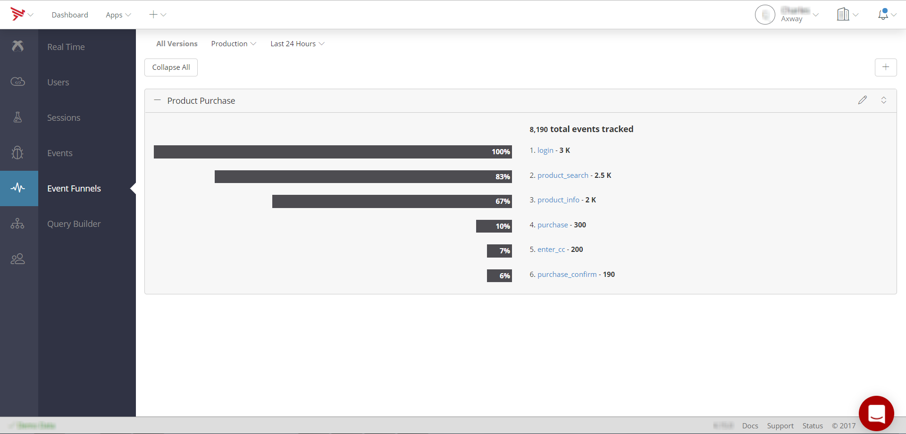
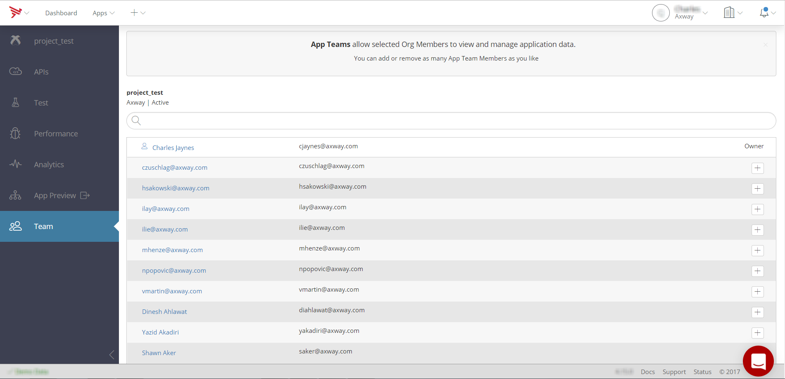

Managing Client Applications
This document provides information on app overview and service keys, what the API Builder, test, and performance tabs entail, how to view real-time and aggregated analytics, and managing application team members.
App Overview and Service Keys
When you select a client application from the Apps menu, or from the list of all applications, it's Overview page opens. The Overview screen displays basic information about the application including its name, description, and application GUID. It also includes a link to key metrics collected by the Analytics service.
For Titanium applications, the Overview screen also specifies the App ID and SDK Version assigned to the application when it was created.

Native iOS and Android applications include the same basic information on the App Info tab as Titanium applications. Additionally, the APP Info tab includes Category, Creator, and Admin information. The Service tab includes current status of Cloud, Performance, Analytics, and Tests. Additionally, the Services tab contains your API service key for the Cloud, Performance, and Analytics services if they are currently enabled for your application. It also includes the Test service key.

APIs Tab
The APIs tab lists the Services, APIs, API Builder (Service) applications, and Mobile Backend Services (Data) and used by the application. Click an item in the list to view or manage its services. See Managing Mobile Backend Services Datasources for details.

Test Tab
The Test tab provides access to the Appcelerator Test service dashboard. Once you've enabled the Test service in your application and installed the TouchTest agent on a device or emulator, this screen lets you record, playback and analyze test compositions run on the target device. For details on using the Test service information, see Getting started with Test.

Performance Tab
The Performance tab lets you view details about application crashes and handled exceptions. For details, see Managing Performance and Crash Data.

Viewing Real-time and Aggregated Analytics
The Analytics tab displays real-time analytics, such as the number of active sessions, average session length, and the number of installs, by platform and geography.

You can also view custom events captured by your application using the Titanium.Analytics object, or the performance APIs provided by the Platform Services SDK for iOS or Android.

You can define event funnels, or custom ordered collections of captured events that track a particular user or business process, such as a sales funnel (browse, select, checkout, for example).

For more information, see Viewing Analytics.
Application Preview
The App Preview tab lets you upload and preview applications. For more information, see Previewing Applications.
Viewing and Managing Application Team Members
The Team tab lets you add organization members to the application team, and set their role (member or admin), as well as remove current team members.
